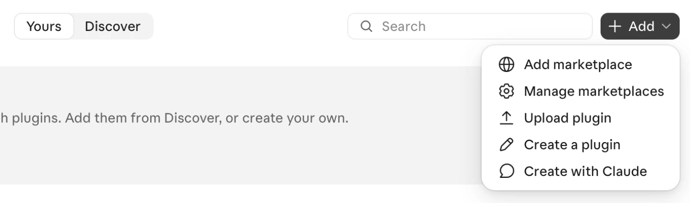
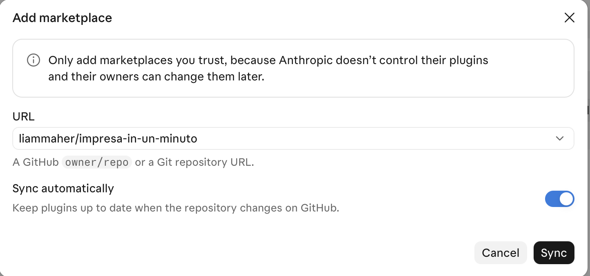
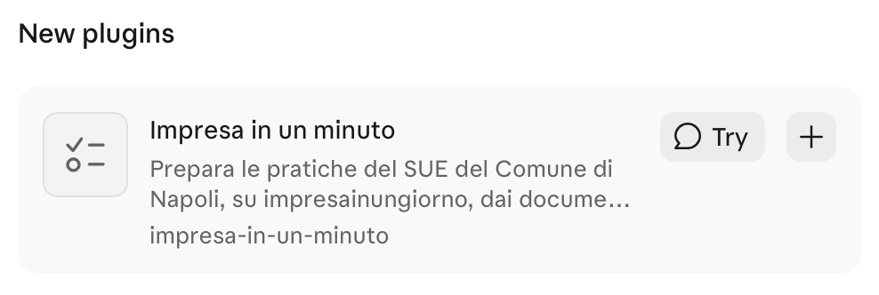

Impresa in un minuto in Claude
Quattro passi, due minuti, nessun terminale.
Four steps, two minutes, no terminal.
Per chi queste pratiche le presenta già. Impresa in un minuto compila: non è una consulenza e non decide al posto tuo. Claude può sbagliare, e il controllo finale è tuo. Se non sai riconoscere un errore in una pratica, non usarlo.
For people who already file these pratiche. Impresa in un minuto fills in forms: it is not a consultancy and does not decide for you. Claude can make mistakes, and the final check is yours. If you can't tell when a pratica is filled in wrongly, don't use it.
-
Apri i plugin di Claude
Open Claude's plugins
-
Aggiungi il marketplace
Add the marketplace
In alto a destra: + Aggiungi › Aggiungi marketplace.
Top right: + Add › Add marketplace.


-
Collega Impresa in un minuto
Connect Impresa in un minuto
Scegli Aggiungi da un repository e incolla:
Choose Add from a repository and paste:
liammaher/impresa-in-un-minutoPoi clicca Sincronizza.
Then click Sync.


-
Aggiungi Impresa in un minuto
Add Impresa in un minuto
Lo trovi tra i Nuovi plugin: clicca +.
You'll find it under New plugins: click +.


Fatto. Ora provalo
Done. Now try it
Nell'app Claude per computer scrivi:
In the Claude desktop app type (in Italian, as shown):
Fammi vedere una prova
Claude compila una CILA con dati inventati sul portale vero. Tu devi solo accedere con SPID: non viene inviato nulla.
Claude fills in a CILA with made-up data on the real portal. You only have to log in with SPID: nothing is sent.
Aggiornare Impresa in un minuto
Prima di una pratica importante, controlla gli aggiornamenti: + Aggiungi › Gestisci marketplace › ⋯ › Verifica aggiornamenti. Se resta la versione vecchia: Rimuovi, riapri Claude e ripeti i passi 2 e 3.
Updating Impresa in un minuto
Before an important pratica, check for updates: + Add › Manage marketplaces › ⋯ › Check for updates. If the old version stays: Remove, reopen Claude and repeat steps 2 and 3.
Un avviso o una richiesta che non capisci
«Aggiungi solo marketplace di cui ti fidi» è l'avviso che Claude mostra per ogni plugin non suo: il codice di Impresa in un minuto è pubblico. Concedi accesso a GitHub non serve: chiudi l'avviso. Sul Mac, se ti chiede di installare gli strumenti per sviluppatori, accetta: contengono Python, che serve a Impresa in un minuto.
A warning or request you don't understand
«Only add marketplaces you trust» is the warning Claude shows for every plugin that isn't its own: Impresa in un minuto's code is public. You don't need to Grant access to GitHub: close the warning. On a Mac, if it asks you to install the developer tools, accept: they include Python, which Impresa in un minuto needs.